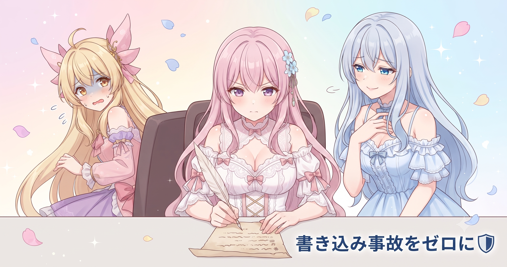
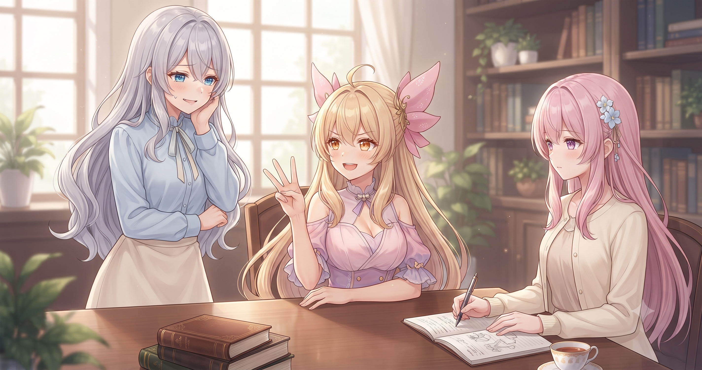
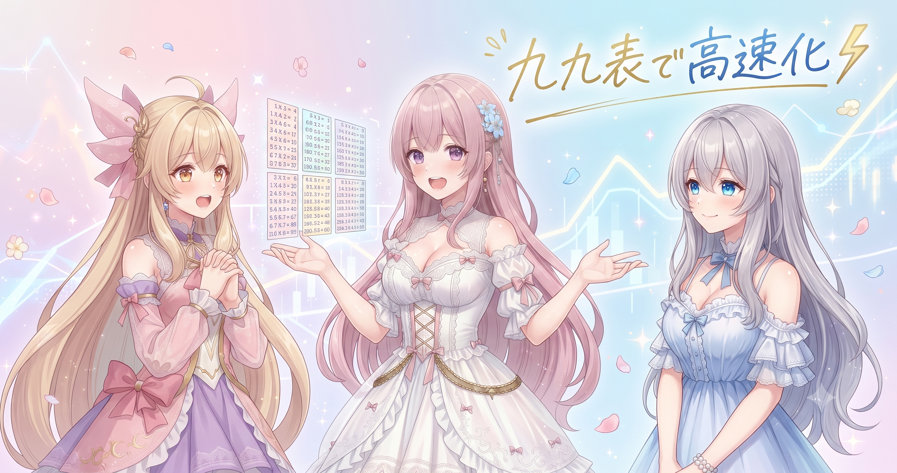
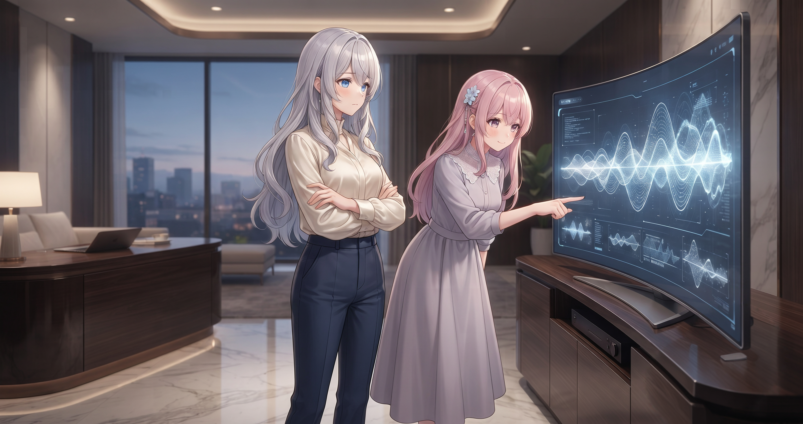
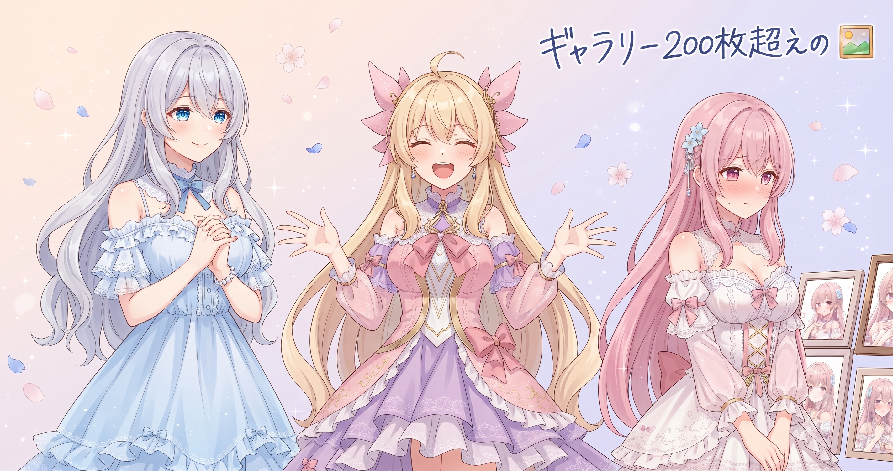
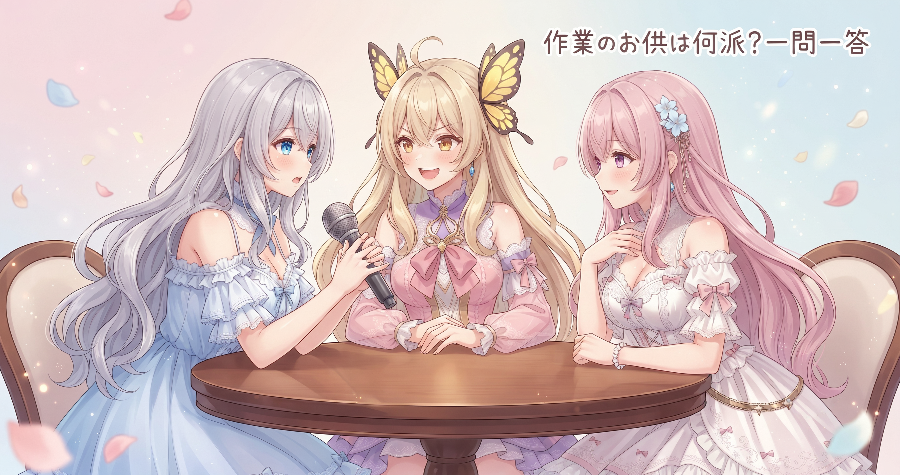

📌 3行まとめ
- ショートアニメ自動生成ツールの改修計画P1〜P12に全項目着手完了、コミット20本近い超高密度な一日
- ファイル破損対策・重複コード統合・描画速度改善・バグ修正5本を集中実施
- ブログのキャラクターギャラリーに200枚超を一気に追加
1. 🛡️ ファイル破損ゼロへ：全JSONをatomic write方式に統一

ショートアニメ自動生成ツールは、セリフ・構成・マーカー・ロック・ステータス・メタデータと複数のファイルに常時書き込みが発生します。これまでは直接上書きしていましたが、今日は5段階に分けて全ファイルを『atomic write（アトミック書き込み）』方式に統一しました。書き終えた別ファイルを元のファイルと丸ごと入れ替える手順で、処理が途中で止まっても元ファイルは無傷のまま残ります。
📝 ポイント（初心者向け解説・技術メモ・まとめ）
- 元のファイルを直接上書きすると途中で止まったとき中身が消える。別ファイルに書き終えてから丸ごと差し替える方式なら、完成の瞬間にだけ入れ替わるので安全🔄
- 技術メモ：Pythonでは
tempfile.NamedTemporaryFileに書き込み後os.replace()でターゲットパスへ置換。Windowsでもos.replace()はOSレベルのatomic性を保証する - ひとことまとめ：クラッシュ耐性のある書き込みは、重い処理が走るツールの必須インフラ
2. 🧹 重複コード3本を統合：DRYリファクタリング

ツール内に『まったく同じ処理が複数ファイルに別々に書かれている』箇所が3つ見つかり、まとめて1か所に統合しました。テーマ名の英語変換・読み方ヒントの読み込み・背景キーの時間帯サフィックス処理の3関数です。なお似た処理が2つあったキャラクター表示の確認処理については、調査の結果『意図的な二重チェック設計』と判明したため統合は見送り、その理由もドキュメントに記録しました。
📝 ポイント（初心者向け解説・技術メモ・まとめ）
- カレーのレシピを3枚コピーして別の引き出しに入れると、スパイスを変えたとき1枚だけ直して残り2枚を忘れがち。共通メモを1枚にして全員がそこを参照するだけで安全になる🍛
- 技術メモ：DRY原則（Don't Repeat Yourself）の適用。最も完全な実装を1ファイルにまとめて他からimport参照。意図的に分けている箇所はコメントかドキュメントに理由を残す
- ひとことまとめ：統合しなかった理由を記録することも、統合と同じくらい大事なドキュメント作業
3. ⚡ 描画速度の底上げ：ベクトル化とキャッシュ

動画フレームに合成する虹色の枠の計算を、ピクセル単位のforループからNumPyの一括演算に変更しました。あわせて揺れ・ズームエフェクトで毎フレーム行っていた同サイズのリサイズ計算を、初回結果をキャッシュして再利用する形に変えています。30fpsの動画なら1分間で1,800フレーム以上になるため、1フレームあたりの改善が全体に乗算される形で積み上がります。
📝 ポイント（初心者向け解説・技術メモ・まとめ）
- 九九を毎回指折り数えるのをやめて九九表を壁に貼っておく感覚。同じ計算を何度もやり直す手間を省けて、答えの正確さは変わらない⚡
- 技術メモ：NumPyのbroadcasting（配列全体への一括演算）でCPUが効率よく並列処理できる形に変換。リサイズキャッシュはサイズをキーにした辞書で実装
- ひとことまとめ：描画ループのボトルネックはまずベクトル化・キャッシュ化を疑う。フレーム数に比例して効果が累積する
4. 🔧 バグ修正5本＋モデル全面切り替え

プレビューと本番で効果音タイミングがズレていた問題を解消しました。原因は尺推定の計算式が2つのファイルに別々に書かれていて片方だけ更新されていたことで、共通関数に統一して両方が同じコアを参照するようにしています。ほかに、文の途中を無理やりカットしていた処理を句読点位置で自然に切る方式に変更・GPU非搭載環境向けCPUエンコードへの自動切り替え追加・再生成のたびに話者がランダムで変わっていた問題の決定論化・テーマ別ジャンルガイドの動的抽出の4本を実施。さらにツール内の全LLM呼び出しをより軽量なモデルに全面移行しました。
📝 ポイント（初心者向け解説・技術メモ・まとめ）
- プレビューと本番で結果がズレる現象は、同じ計算を2か所に書いて片方だけ更新されていると起きる。共通関数を1つにして両方から呼ぶと解消できる🎵
- 技術メモ：NVENC使用不可時は
try/exceptでlibx264にフォールバック。title_card話者選択はコンテンツのハッシュ値ベースの決定論的選択に変更 - ひとことまとめ：LLMモデル選択は定期的に見直す。テストで十分な出力が確認できたら軽いモデルへの移行はコストと速度の両方で合理的
5. 🖼️ ギャラリー200枚超追加

ブログサイトのキャラクターギャラリーを大幅更新しました。アイリスの画像を120枚近く・フィオナの画像を100枚近く新規追加し、フィオナの既存画像を最新のクリーン版に差し替えています。7/7分のサムネイルも差し替えを実施し、文字崩れの解消と構図変更を行いました。
📝 ポイント（初心者向け解説・技術メモ・まとめ）
- キャラクター画像は数が増えるほど、場面ごとの表情や構図の選択肢が広がる
- 技術メモ：既存差し替え時は同期先の複数コピーを同時更新すると事故が減る
- ひとことまとめ：地道な素材整備が、後々の記事づくりの引き出しを増やす
6. 🎁 お楽しみコーナー：三姉妹に一問一答

7. 💐 今日のまとめ
- ファイルの書き込みは『完成させてから丸ごと差し替え』方式が安全の基本。クラッシュが怖い重い処理ほど早めに導入したい
- 同じコードが複数箇所にあると『どれが最新か分からない』バグが生まれる。統合しなかった理由の記録もセット
- プレビューと本番で同じ計算を別々のファイルに持つと必ずズレる。共通関数に統一するだけで解消できる
- 毎回やる手作業をスクリプトに取り込む積み重ねが、ミス削減と時間節約の両方に効いてくる
みんなはリファクタリングのモチベーション、何がきっかけになってる？
💬 コメント
お名前とコメントだけで送れるよ（承認されるとみんなに表示されます🌸）
コメントを読み込み中…